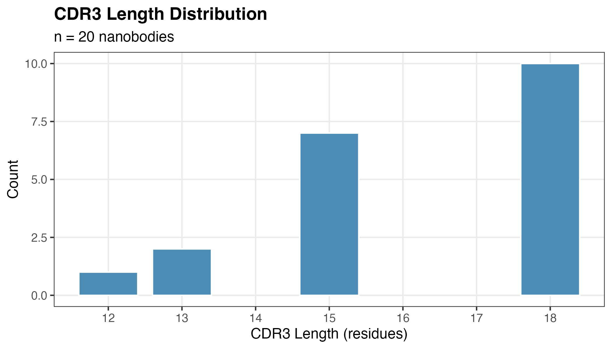
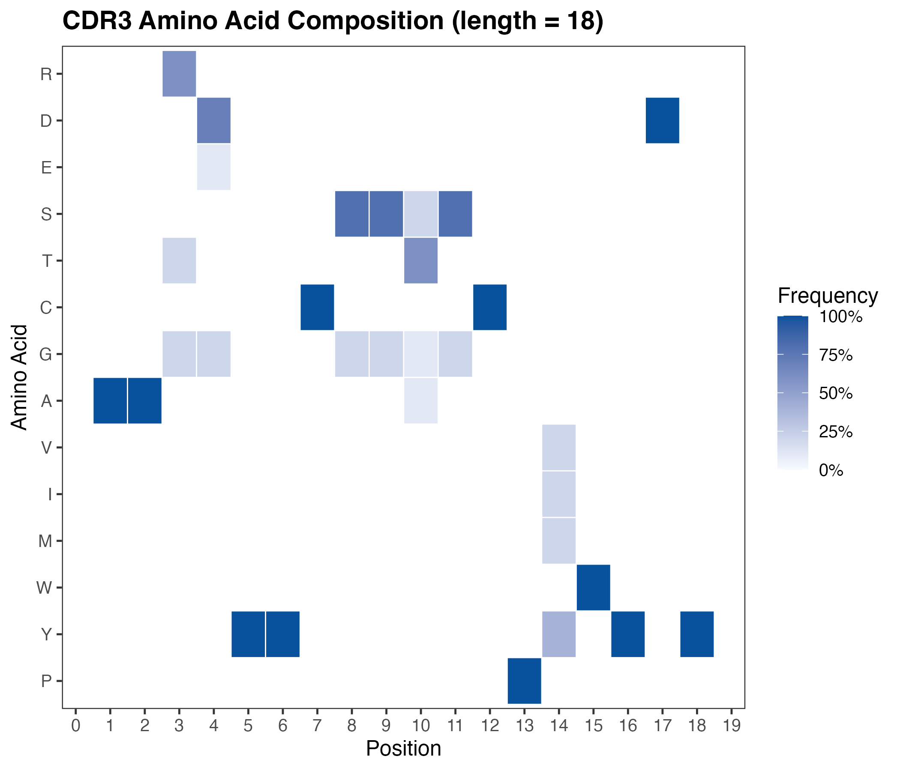

vignettes/nanobody-cdr3-analysis.Rmd
nanobody-cdr3-analysis.RmdNanobodies are single-domain antibody fragments (VHH) derived from camelid heavy-chain-only antibodies. Their complementarity-determining region 3 (CDR3) is the primary determinant of antigen binding specificity and tends to be longer and more structurally diverse than the CDR3 of conventional antibodies.
This vignette demonstrates how to use abseqr to:
read_fasta() parses any standard FASTA file into a
tibble with one row per sequence. Multi-line sequences are automatically
collapsed.
library(abseqr)
fasta_file <- system.file("extdata", "example_nanobodies.fasta",
package = "abseqr")
seqs <- read_fasta(fasta_file)
seqs
#> # A tibble: 20 × 3
#> header sequence length
#> <chr> <chr> <int>
#> 1 Nb_001|VHH|anti-lysozyme QVQLVESGGGLVQAGGSLRLSCAASGRTFSSYAMGWFRQAP… 125
#> 2 Nb_002|VHH|anti-GFP EVQLVESGGGLVQPGGSLRLSCAASGFTFSSYAMSWVRQAP… 119
#> 3 Nb_003|VHH|anti-HER2 QVQLVESGGGLVQAGGSLRLSCAASGFTFSSYGMSWVRQAP… 119
#> 4 Nb_004|VHH|anti-EGFR EVQLLESGGGLVQPGGSLRLSCAASGFTLSSYGMHWVRQAT… 122
#> 5 Nb_005|VHH|anti-TNF QVQLVESGGGLVQAGGSLRLSCAVSGRTFSNYAMGWFRQAP… 125
#> 6 Nb_006|VHH|anti-VEGF EVQLVESGGGLVQAGGSLRLSCAASGRTFSSFAMGWFRQAP… 125
#> 7 Nb_007|VHH|anti-IL6 QVQLVESGGGLVQPGGSLRLSCAASGFTFSSYSMSWVRQAP… 122
#> 8 Nb_008|VHH|anti-PD1 EVQLVESGGGLVQAGGSLRLSCAASGRTFSGYAMSWFRQAP… 125
#> 9 Nb_009|VHH|anti-CD38 QVQLVESGGGLVQAGGSLRLSCAASGRTFSSHAMGWFRQAP… 122
#> 10 Nb_010|VHH|anti-albumin EVQLVESGGGLVQAGGSLRLSCAASGRTFSSYAMGWFRQAP… 125
#> 11 Nb_011|VHH|anti-lysozyme-v2 QVQLVESGGGLVQAGGSLRLSCAASGRTFSSYAMGWFRQAP… 125
#> 12 Nb_012|VHH|anti-fibrin EVQLVESGGGLVQPGGSLRLSCAASGFTFSSYAMSWVRQAP… 122
#> 13 Nb_013|VHH|anti-HER2-v2 QVQLVESGGGLVQAGGSLRLSCAASGFTFSSYGMSWVRQAP… 119
#> 14 Nb_014|VHH|anti-insulin EVQLVESGGGLVQPGGSLRLSCAASGFTLSSYGMHWVRQAT… 122
#> 15 Nb_015|VHH|anti-CTLA4 QVQLVESGGGLVQAGGSLRLSCAVSGRTFSNYAMGWFRQAP… 125
#> 16 Nb_016|VHH|anti-VEGF-v2 EVQLVESGGGLVQAGGSLRLSCAASGRTFSSFAMGWFRQAP… 125
#> 17 Nb_017|VHH|anti-IL17 QVQLVESGGGLVQPGGSLRLSCAASGFTFSSYSMSWVRQAP… 122
#> 18 Nb_018|VHH|anti-RSV EVQLVESGGGLVQAGGSLRLSCAASGRTFSGYAMSWFRQAP… 125
#> 19 Nb_019|VHH|anti-influenza QVQLVESGGGLVQAGGSLRLSCAASGRTFSSHAMGWFRQAP… 122
#> 20 Nb_020|VHH|anti-HIV EVQLVESGGGLVQAGGSLRLSCAASGRTFSSYAMGWFRQAP… 125The length column gives the total sequence length in
residues. Our example set contains 20 nanobody sequences.
extract_cdr3() uses conserved flanking residues to
identify CDR3 boundaries. For VHH nanobodies, CDR3 is flanked by a
conserved cysteine (C) at the N-terminal end and a
WGXG motif at the C-terminal end — following the
Kabat/IMGT convention used in structural databases such as SAbDab.
seqs <- extract_cdr3(seqs)
seqs |> dplyr::select(header, cdr3, cdr3_length)
#> # A tibble: 20 × 3
#> header cdr3 cdr3_length
#> <chr> <chr> <int>
#> 1 Nb_001|VHH|anti-lysozyme AAGDYYCSSTSCPIWYDY 18
#> 2 Nb_002|VHH|anti-GFP ARDLYYYYGMDV 12
#> 3 Nb_003|VHH|anti-HER2 AAKDYSSYWYFDY 13
#> 4 Nb_004|VHH|anti-EGFR ARDRGYYRSGWYNDY 15
#> 5 Nb_005|VHH|anti-TNF AARDYYCSSASCPVWYDY 18
#> 6 Nb_006|VHH|anti-VEGF AARGYYCSGSGCPYWYDY 18
#> 7 Nb_007|VHH|anti-IL6 ARDHRGYYSGWYNDY 15
#> 8 Nb_008|VHH|anti-PD1 AATDYYCSSTSCPYWYDY 18
#> 9 Nb_009|VHH|anti-CD38 AAKDRGYYSGMYNDY 15
#> 10 Nb_010|VHH|anti-albumin AARDYYCGSTSCPMWYDY 18
#> 11 Nb_011|VHH|anti-lysozyme-v2 AAGEYYCSSTSCPIWYDY 18
#> 12 Nb_012|VHH|anti-fibrin ARDRGYYRSGWYFDY 15
#> 13 Nb_013|VHH|anti-HER2-v2 AAKDYSSYWYFAY 13
#> 14 Nb_014|VHH|anti-insulin ARDRGYYRSGWYNDY 15
#> 15 Nb_015|VHH|anti-CTLA4 AARDYYCSSGSCPVWYDY 18
#> 16 Nb_016|VHH|anti-VEGF-v2 AARGYYCSGSGCPMWYDY 18
#> 17 Nb_017|VHH|anti-IL17 ARDHRGYYSGWYFDY 15
#> 18 Nb_018|VHH|anti-RSV AATDYYCSSTSCPYWYDY 18
#> 19 Nb_019|VHH|anti-influenza AAKDRGYYSGMFNDY 15
#> 20 Nb_020|VHH|anti-HIV AARDYYCGSTSCPYWYDY 18Sequences where no CDR3 could be detected receive NA. We
can check how many were successfully extracted:
n_total <- nrow(seqs)
n_found <- sum(!is.na(seqs$cdr3))
cat(sprintf("CDR3 extracted: %d / %d sequences (%.0f%%)\n",
n_found, n_total, 100 * n_found / n_total))
#> CDR3 extracted: 20 / 20 sequences (100%)CDR3 length is a key characteristic of nanobodies. Nanobody CDR3s tend to be longer than their conventional antibody counterparts (typically 16–24 residues in VHHs vs 10–15 in VH domains), partly because they often form protruding loop structures that reach into enzyme active sites.
cdr3_length_dist(seqs,
subtitle = paste0("n = ", n_found, " nanobodies"))
CDR3 length distribution across example nanobodies.
To analyse position-specific amino acid preferences, we first select
sequences of a single CDR3 length (the most common length in the
dataset), then compute composition with
aa_composition().
# Find the most common CDR3 length
common_len <- seqs |>
dplyr::filter(!is.na(cdr3_length)) |>
dplyr::count(cdr3_length, sort = TRUE) |>
dplyr::slice(1) |>
dplyr::pull(cdr3_length)
cat("Most common CDR3 length:", common_len, "residues\n")
#> Most common CDR3 length: 18 residues
comp <- aa_composition(seqs, length_filter = common_len)
comp
#> # A tibble: 31 × 4
#> position amino_acid n frequency
#> <int> <chr> <int> <dbl>
#> 1 1 A 10 1
#> 2 2 A 10 1
#> 3 3 G 2 0.2
#> 4 3 R 6 0.6
#> 5 3 T 2 0.2
#> 6 4 D 7 0.7
#> 7 4 E 1 0.1
#> 8 4 G 2 0.2
#> 9 5 Y 10 1
#> 10 6 Y 10 1
#> # ℹ 21 more rowsaa_composition_plot() visualises this as a heatmap where
darker cells indicate higher frequency at that position.
aa_composition_plot(
comp,
title = paste0("CDR3 Amino Acid Composition (length = ", common_len, ")")
)
Per-position amino acid composition for the most common CDR3 length. Amino acids are grouped by physicochemical property.
Position-specific patterns reflect selection pressures on antigen binding: positions near the tips of the CDR3 loop tend to show more diversity, while positions flanking the conserved cysteines are more constrained.
| Function | Input | Output |
|---|---|---|
read_fasta() |
FASTA file path | Tibble: header, sequence, length |
extract_cdr3() |
Tibble or character vector | Adds cdr3, cdr3_length columns |
cdr3_length_dist() |
Tibble with cdr3_length | ggplot bar chart |
aa_composition() |
Tibble with cdr3 | Tibble: position × amino_acid frequencies |
aa_composition_plot() |
aa_composition tibble | ggplot heatmap |
For further analysis, the tidy output of each function is designed to
plug directly into dplyr and ggplot2
workflows.
sessionInfo()
#> R version 4.5.2 (2025-10-31)
#> Platform: aarch64-apple-darwin20
#> Running under: macOS Sequoia 15.6.1
#>
#> Matrix products: default
#> BLAS: /System/Library/Frameworks/Accelerate.framework/Versions/A/Frameworks/vecLib.framework/Versions/A/libBLAS.dylib
#> LAPACK: /Library/Frameworks/R.framework/Versions/4.5-arm64/Resources/lib/libRlapack.dylib; LAPACK version 3.12.1
#>
#> locale:
#> [1] en_US.UTF-8/en_US.UTF-8/en_US.UTF-8/C/en_US.UTF-8/en_US.UTF-8
#>
#> time zone: Europe/Istanbul
#> tzcode source: internal
#>
#> attached base packages:
#> [1] stats graphics grDevices utils datasets methods base
#>
#> other attached packages:
#> [1] abseqr_0.1.0
#>
#> loaded via a namespace (and not attached):
#> [1] gtable_0.3.6 jsonlite_2.0.0 dplyr_1.2.1 compiler_4.5.2
#> [5] tidyselect_1.2.1 stringr_1.6.0 jquerylib_0.1.4 scales_1.4.0
#> [9] systemfonts_1.3.2 textshaping_1.0.5 yaml_2.3.12 fastmap_1.2.0
#> [13] ggplot2_4.0.3 R6_2.6.1 labeling_0.4.3 generics_0.1.4
#> [17] knitr_1.51 htmlwidgets_1.6.4 tibble_3.3.1 desc_1.4.3
#> [21] RColorBrewer_1.1-3 bslib_0.10.0 pillar_1.11.1 rlang_1.2.0
#> [25] utf8_1.2.6 cachem_1.1.0 stringi_1.8.7 xfun_0.57
#> [29] S7_0.2.1 fs_2.1.0 sass_0.4.10 otel_0.2.0
#> [33] cli_3.6.6 pkgdown_2.2.0 withr_3.0.2 magrittr_2.0.5
#> [37] digest_0.6.39 grid_4.5.2 rstudioapi_0.18.0 lifecycle_1.0.5
#> [41] vctrs_0.7.3 evaluate_1.0.5 glue_1.8.0 farver_2.1.2
#> [45] ragg_1.5.2 rmarkdown_2.31 tools_4.5.2 pkgconfig_2.0.3
#> [49] htmltools_0.5.9